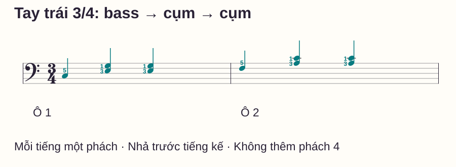
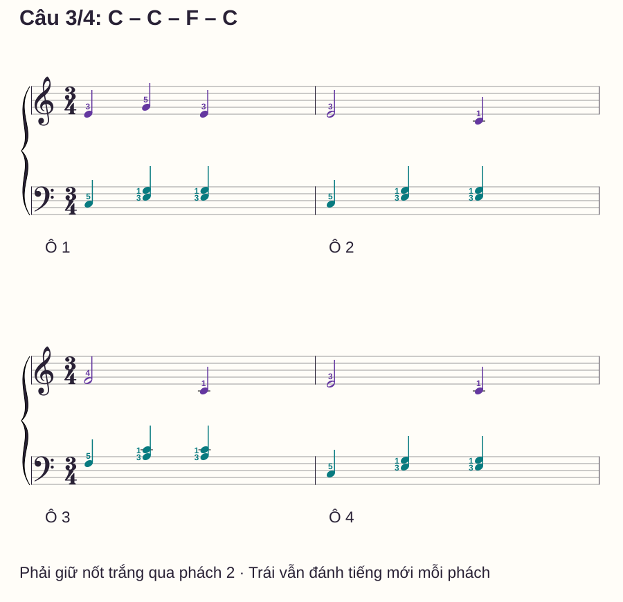
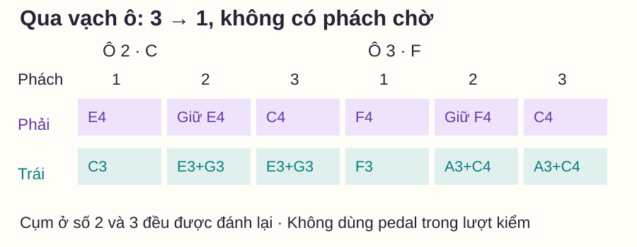

Hợp âm và hòa âm
Đệm piano nhịp 3/4: bass ở phách 1, hợp âm ở phách 2–3
# Đệm piano nhịp 3/4: bass ở phách 1, hợp âm ở phách 2–3
Bạn đã bấm được hợp âm C, nhưng khi muốn đệm một câu nhạc có ba phách, tay trái lại thêm một tiếng hoặc ngừng trước khi đổi hợp âm. Chỗ khó ở đây có thể là tổ chức thời gian, chưa hẳn do thiếu thế hợp âm.
Bài này dùng một mẫu nhỏ: bass riêng ở số 1, cụm hai âm ở số 2 và số 3. Bạn sẽ chơi riêng tay trái, ghép một giai điệu bốn ô rồi kiểm đoạn chuyển C sang F. Toàn bộ sheet là ví dụ riêng của bài; không cần tìm bài hát ngoài hoặc mở ứng dụng để tập.
Trả lời nhanh
Trong bài đệm piano nhịp 3/4 này, mỗi ô có ba phách đen đều: tay trái đánh bass ở phách 1, cụm hai âm ở phách 2 rồi đánh lại cụm ở phách 3. Hết số 3 là tới số 1 của ô sau, không thêm một phách chờ. Với C, dùng C3 rồi E3–G3 hai lần; với F, dùng F3 rồi A3–C4 hai lần. Mỗi tiếng trái dài một phách và được nhả khi tiếng kế bắt đầu. Ghép tay phải sau khi đã biết nốt và thời điểm riêng của hai bè; nốt trắng bên phải vẫn giữ hai phách dù trái đang đổi tiếng.
Hiểu ba phách trước khi học mẫu đệm
Theo Open Music Theory — Meter and time signatures, nhịp đơn ba có ba phách, mỗi phách có thể chia đôi. Trong 3/4, đơn vị phách là nốt đen. Đọc “1–2–3 | 1–2–3” ở tốc độ phù hợp trước khi thêm phím.
Nhịp 6/8 thường tổ chức thành hai phách lớn, mỗi phách chia ba. Việc hai loại ô có tổng trường độ tương đương sáu móc đơn không làm cách nhóm phách giống nhau. Ở đây chỉ học 3/4 và không chuyển mẫu bằng cách đọc sáu số đều.
Mẫu bass–cụm–cụm có thể gợi cảm giác đệm valse, nhưng nhịp 3/4 không bắt buộc mọi tác phẩm phải đệm như vậy. Cũng không cần nện mạnh số 1. Hãy nghe đầu nhóm ba rõ, giữ chuyển động thoải mái rồi mới cân đối độ nổi của phần đệm.
Chuẩn bị nốt và ngón tay trái
C4 là Đô giữa; C3 ở thấp hơn một quãng tám. Ngón 1 là cái, ngón 5 là út ở cả hai tay. Trong bảng, dấu “+” chỉ các âm bấm cùng lúc, không phải chơi nối nhau.
| Hòa âm | Phách 1: bass | Phách 2: cụm | Phách 3: cụm đánh lại |
|---|---|---|---|
| C | C3, ngón trái 5 | E3+G3, ngón 3+1 | E3+G3, ngón 3+1 |
| F | F3, ngón trái 5 | A3+C4, ngón 3+1 | A3+C4, ngón 3+1 |
Hai tiếng ở phách 2 và 3 chỉ gồm hai âm trên của hợp âm. Khi tính cả bass đã nghe trong ô, phần đệm dùng các thành phần C–E–G hoặc F–A–C. Không gọi riêng E–G là hợp âm C đầy đủ.

Đặt và kiểm từng vùng khi chưa tính nhịp. Từ vùng C sang F, chuyển cả bàn tay lên vị trí mới; không cố giữ C3 rồi giãn tới C4. Ngón gợi ý chỉ phục vụ mẫu cụ thể này. Nếu cụm hai âm chưa thoải mái, thử bass riêng rồi xác định lại chỗ đặt trước khi bấm cụm.
Tập một ô mà không tạo phách thứ tư
Đếm một ô dẫn vào “1–2–3”, rồi C3 ở số 1, E3+G3 ở số 2 và lại E3+G3 ở số 3. Bass C3 nhả lúc tới số 2; cụm đầu nhả để đánh lại ở số 3. Đây là cách thực hiện các nốt đen trong ví dụ, không dùng pedal.
Lặp ô C hai lần. Điểm cần nghe là khoảng từ tiếng cụm ở số 3 tới bass ở số 1 kế tiếp bằng khoảng giữa các phách khác. Nếu cần thêm thời gian tìm bass, tách việc định vị ra khỏi lượt đếm, sau đó thử lại chậm hơn.
Khi ghép C sang F, hãy học riêng đích F3 và cụm A3+C4. Sau đó thử hai ô mẫu trong hình. Cho phép nhìn bàn phím để đặt đích khi cần; ưu tiên đúng vùng và đủ ba phách thay vì buộc mắt luôn ở sheet.
Ghép giai điệu bốn ô: C–C–F–C
Tay phải chỉ dùng C4–G4. Đặt ngón 1–5 lần lượt trên C4–D4–E4–F4–G4, không cần chuyển vùng. Tay trái dùng hai thế trong bảng; ô 1, 2 và 4 thuộc C, ô 3 thuộc F.

| Ô | Phải: nốt và ngón | Trái theo số 1–2–3 |
|---|---|---|
| 1 | E4 đen 3, G4 đen 5, E4 đen 3 | C3 → E3+G3 → E3+G3 |
| 2 | E4 trắng 3, C4 đen 1 | C3 → E3+G3 → E3+G3 |
| 3 | F4 trắng 4, C4 đen 1 | F3 → A3+C4 → A3+C4 |
| 4 | E4 trắng 3, C4 đen 1 | C3 → E3+G3 → E3+G3 |
Chơi phải riêng, nói rõ ô 2 bắt đầu E4 ở số 1, giữ qua số 2 và tới số 3 mới đánh C4. Khi thêm trái, E4 không được nhả chỉ vì trái chuyển từ bass sang cụm. Hãy thử riêng ô 2 để nghe được sự khác biệt ấy.
Sau đó ghép ô 1–2. Nếu cả hai tay vô tình đánh lại ở mọi phách, quay về đúng nốt trắng phải: giữ E4 khi trái đánh cụm đầu. Chưa cần tăng tốc hoặc chạy cả bốn ô để sửa lỗi này.
Lưới phách cho chỗ đổi C sang F

Ô 2 số 3 có C4 bên phải và E3+G3 bên trái. Tới ô 3 số 1, phải đổi sang F4, trái chuyển bass lên F3. Đầu ô 3 chưa bấm cụm A3+C4; cụm đó tới số 2 mới vào.
Học hai ô đầy đủ sau khi đã tìm được đích. Nếu cần thử riêng chỗ nối, lấy số 3 ô 2 sang số 1–2 ô 3, gọi rõ “3 | 1–2”. Đây là đoạn cắt để sửa chuyển, không phải một ô 3/4 mới bắt đầu ở số 3.
Bảng lỗi và việc cần sửa
| Bạn nghe/thấy gì? | Kiểm điều gì? | Thử sửa |
|---|---|---|
| Chơi thành bass–cụm–cụm–cụm | Có thêm số 4 không? | Đếm không đàn một vòng rồi tập hai ô C |
| Có khoảng chờ trước F3 | Đã tìm vùng F trước lượt ghép chưa? | Học đích riêng, giảm tempo, thử lại đoạn nối |
| Hai âm cụm vào lần lượt | Có vô tình rải cụm không? | Đặt sẵn hai ngón, thử bấm cùng điểm bắt đầu |
| Phải E4 nhả ở số 2 ô 2 | Có nhầm tay đổi thì tay kia cũng đổi? | Tập đúng ô 2 với lời “phải giữ, trái đánh” |
| Cụm trái át câu phải | Có tăng lực ở cả ba tiếng? | Nghe riêng câu phải, thêm trái vừa đủ làm nền |
Routine mười phút và tự kiểm
- 0–2 phút: đếm nhóm ba, đọc và đặt hai vùng C/F khi chưa chạy nhịp.
- 2–4 phút: chơi trái hai ô C, sau đó thử C sang F.
- 4–6 phút: chơi phải riêng rồi ghép ô 2, giữ đúng nốt trắng.
- 6–8 phút: ghép bốn ô ở tempo đủ để chuyển vùng.
- 8–10 phút: bắt trực tiếp ô 3 và kiểm điểm kết thúc câu.
Trước khi mở đáp án: ô 3 số 1 trái bấm gì? Ở số 2 phải đánh lại F4 không? Hết ô 4 có cần bass C3 của ô 5 để kết thúc không?
Đáp án và điều kiện mở rộng
Ô 3 số 1: trái chỉ bấm F3, ngón 5. Số 2: phải giữ F4, không đánh lại; trái bấm A3+C4. Cuối ô 4, hai bè nhả ở số 1 tưởng tượng của ô 5; không thêm bass mới. Có thể mở rộng khi giữ được ba phách mỗi ô, bắt được từ ô 3 và chuyển qua C–F–C không thêm khoảng chờ. Chưa cần chơi nhanh hoặc thêm pedal.
Đọc thêm
Hợp âm piano cơ bản giúp kiểm các thành phần C và F. Cách đếm nhịp ôn trường độ. Nếu phải nhả theo trái, thử một tay giữ, một tay di chuyển.
Câu hỏi thường gặp
Có thể đệm mọi bài 3/4 bằng mẫu này không?
Không. Còn phải khớp hòa âm, nhịp thay hợp âm, vùng âm và tính chất câu nhạc. Đây là mẫu luyện riêng, không phải công thức cho mọi ca khúc.
Có phải bass luôn ở nốt C không?
Không. Trong mẫu này, ô C dùng C3 và ô F dùng F3. Bản phối khác có thể dùng bass hoặc thế khác; cần đọc phần đệm cụ thể.
Phách 2 và 3 có cần giữ dính nhau không?
Hai cụm được đánh lại ở hai phách riêng. Tập không tạo khoảng chờ thừa, nhưng vẫn nhả đủ để phát âm cụm sau. Không giữ lì hai phím rồi coi đó là hai tiếng.
Nên bật máy đếm ở tốc độ bao nhiêu?
Chọn tốc độ để bạn đọc và đặt đúng trước mỗi điểm vào. Nếu dùng metronome cho bài này, đặt mỗi tiếng click bằng một phách đen; chưa cần chọn một mức BPM chung cho mọi người.
Nhịp 3/4 khác 6/8 ở đâu?
3/4 trong bài đếm ba phách đen; 6/8 thường nhóm thành hai phách lớn, mỗi phách ba móc đơn. Đừng chỉ so tổng số móc đơn rồi dùng cùng cách nhấn/nhóm.
Có cần dùng pedal để đệm nghe tròn hơn?
Lượt này không pedal để nghe rõ thời điểm nhả và đánh lại. Học pedal là nhiệm vụ riêng theo hòa âm và chỉ dẫn bản nhạc sau khi mẫu đã rõ.
Nguồn và ghi chú biên soạn
- Open Music Theory — Meter and time signatures: đối chiếu nhịp đơn ba, đơn vị phách và khác biệt với nhịp kép. Kiểm ngày 27/10/2026.
- Câu nhạc, thế đệm, hình, routine và phép kiểm tự biên soạn. Chưa có giáo viên độc lập review hoặc thử nghiệm học viên; không cam kết tiến bộ trong mười phút.